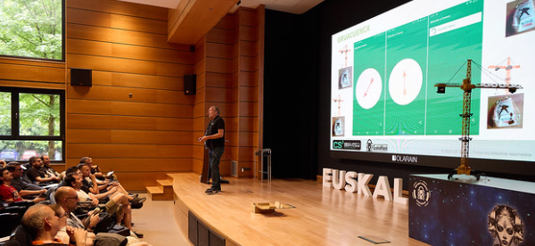

PICK 01 · HIGHFri–Sat · 19–20 June 2026 · 3 weeks out
EuskalHack Security Congress IX
Ninth edition of the Basque ethical-hacking association’s flagship con at Colegio Mayor Olarain — a residence-hall venue on Paseo de Ondarreta, walkable from Ondarreta beach. Programme spans reverse engineering, vulnerability development, mobile attacks, APTs and AI-in-cybersecurity, with an open-space block Friday evening running into Saturday morning. [3] Capacity ~200 — small enough that buying late means risking sold-out. This is the highest-signal event to pair with a Michelin dinner.
- Tickets
- €85 / €125 / €190 [2]
- Capacity
- ~200 attendees
- Venue
- Olarain · Paseo de Ondarreta 24
- Track
- Offensive sec, RE, AI-sec